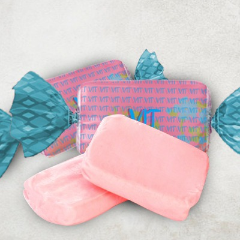
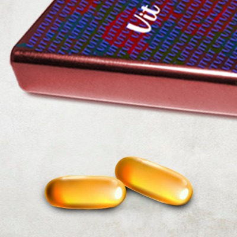

AME O SEU CORPO,
CONHEÇA O
VIT MENSTRUAL
Para a criação de nossos produtos, fomos até as mulheres e perguntamos as mesmas qual era o problema que mais as incomodava em relação a menstruação, e grande parte respondeu que o ciclo desregulado é um de seus incômodos, então começamos a pensar em algo natural que poderia as ajudar.
Depois de muitas pesquisas, descobrimos que as propriedades da cenoura ajudam o fluxo sanguíneo na região da pélvis, e assim foi com o cacau e a gelatina. A partir disto, criamos o Vitmenstrual, que é uma bala feita de cenoura que ajuda a regular o ciclo menstrual.

Criamos a bala Vitmenstrual, que tem como público alvo todas as jovens e mulheres que sofrem com o problema do ciclo menstrual desregulado. Nosso produto é 100% natural e tem como principal ingrediente a cenoura, que é conhecida por sua eficácia em regular o ciclo menstrual. Além de agir como reguladora do ciclo menstrual, a capsúla/bala Vitmenstrual combate a cólica e dores de cabeça durante o período de folicular.
Versão Infantil
Versão Adulto
